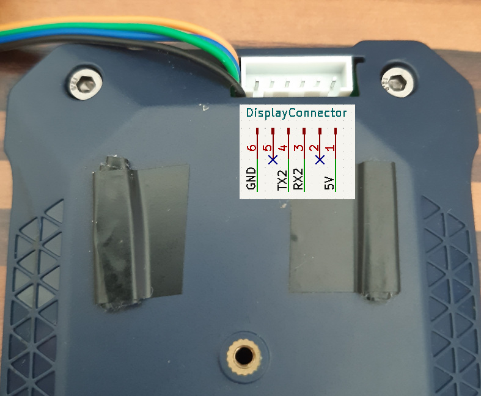

Display Connection
The display is connected to an USB-TTL that is capable of putting out 5V. The RaspberryPI Serial Interface is also usable.
Warning
It’s heavily recommended to connect, the display when the Raspberry Pi is powered off!
Display Connector
Connection
Using USB-TTL
Display Connector |
USB-TTL |
|---|---|
5V |
5V |
GND |
GND |
TX2 |
RXD |
RX2 |
TXD |
Note
On some of the USB-TTL RXD means RXD should be connected here, and some other it means that this pin is RXD. If the display just shows a static mask without any values: RXD and TXD needs to be swapped.
Using Pi Serial interface
Activate serial interface on Raspberry Pi
sudo raspi-config
3) Interface Options
6) Serial Port
Would you like a login shell to be accessible over serial?
No
Would you like the serial port hardware to be enabled?
Yes
Disconnect Raspberry Pi from Power
Connect Display to Raspberry PI GPIO Pin Header
RaspberryPI PIN
Display
5V
5V
GND
GND
Pin 8
RX2
Pin 10
TX2
Tweak serial_config.json
set “serial_port”: “/dev/ttyAMA0”
Tweak websocket.json
set “ip”: “10.0.1.69”